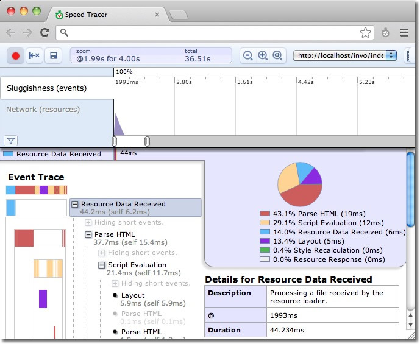

Spis treściPoprzedni temat< Phalcon Developer Tools on Linux Następny tematTa strona |
Increasing Performance: What’s next?¶Get faster applications requires refine many aspects: server, client, network, database, web server, static sources, etc. In this chapter we highlight scenarios where you can improve performance and how detect what is really slow in your application. Profile on the Server¶Each application is different, the permanent profiling is important to understand where performance can be increased. Profiling gives us a real picture on what is really slow and what does not. Profiles can vary between a request and another, so it is important to make enough measurements to make conclusions. Profiling with XDebug¶Xdebug provides an easier way to profile PHP applications, just install the extension and enable profiling in the php.ini: xdebug.profiler_enable = On
Using a tool like Webgrind you can see which functions/methods are slower than others: 
Profiling with Xhprof¶Xhprof is another interesting extension to profile PHP applications. Add the following line to the start of the bootstrap file: <?php
xhprof_enable(XHPROF_FLAGS_CPU + XHPROF_FLAGS_MEMORY);
Then at the end of the file save the profiled data: <?php
$xhprof_data = xhprof_disable('/tmp');
$XHPROF_ROOT = "/var/www/xhprof/";
include_once $XHPROF_ROOT . "/xhprof_lib/utils/xhprof_lib.php";
include_once $XHPROF_ROOT . "/xhprof_lib/utils/xhprof_runs.php";
$xhprof_runs = new XHProfRuns_Default();
$run_id = $xhprof_runs->save_run($xhprof_data, "xhprof_testing");
echo "http://localhost/xhprof/xhprof_html/index.php?run={$run_id}&source=xhprof_testing\n";
Xhprof provides a built-in html viewer to analize the profiled data: 

Profiling SQL Statements¶Most database systems provide tools to identify slow SQL statements. Detecting and fixing slow queries is very important in order to increase performance in the server side. In the Mysql case, you can use the slow query log to know what SQL queries are taking more time than expected: log-slow-queries = /var/log/slow-queries.log
long_query_time = 1.5
Profile on the Client¶Sometimes we may need to improve the loading of static elements such as images, javascript and css to improve performance. The following tools are useful to detect common bottlenecks in the client side: Yahoo! YSlow¶YSlow analyzes web pages and suggests ways to improve their performance based on a set of rules for high performance web pages 
Profile with Speed Tracer¶Speed Tracer is a tool to help you identify and fix performance problems in your web applications. It visualizes metrics that are taken from low level instrumentation points inside of the browser and analyzes them as your application runs. Speed Tracer is available as a Chrome extension and works on all platforms where extensions are currently supported (Windows and Linux).

This tool is very useful because it help you to get the real time used to render the whole page including HTML parsing, Javascript evaluation and CSS styling. Use a recent PHP version¶PHP is faster every day, using the latest version improves the performance of your applications and also of Phalcon. Use a PHP Bytecode Cache¶APC as many other bytecode caches help an application to reduce the overhead of read, tokenize and parse PHP files in each request. Once the extension is installed use the following setting to enable APC: apc.enabled = On
PHP 5.5 includes a built-in bytecode cache called ZendOptimizer+, this extension is also available for 5.3 and 5.4. Do blocking work in the background¶Process a video, send e-mails, compress a file or an image, etc., are slow tasks that must be processed in background jobs. There are a variety of tools that provide queuing or messaging systems that work well with PHP: Google Page Speed¶mod_pagespeed speeds up your site and reduces page load time. This open-source Apache HTTP server module (also available for nginx as ngx_pagespeed) automatically applies web performance best practices to pages, and associated assets (CSS, JavaScript, images) without requiring that you modify your existing content or workflow. |